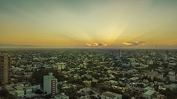

Durante el período hispano, el chaco se mantuvo como un reducto indígena no conquistado. Las pocas misiones que se instalaron en su territorio no pudieron subsistir, por el asedio de los Indios bravos o guaycurúes (como se llamaba también a los tobas, mocovíes y abipones). Estos indios podían vivir de la cacería gracias a la rica fauna de mamíferos que había en la región. Efectivamente, chaco significa, enlengua quichua, "país de las cacerías".
El Territorio Nacional del Gran Chaco con capital en Villa Occidental fue creado el 31 de enero de 1872 mediante un decreto del presidente Domingo Faustino Sarmiento nombrando al comandante de las fuerzas argentinas acantonadas en Asunción, Julio de Vedia como gobernador.
La provincia del Chaco se halla ubicada en una llanura continua, con muy pocos accidentes geográficos Forma parte de la gran llanura chaco-pampeana que va desde el Paraguay hasta la provincia de Buenos Aires. ... Todo el sector sudeste del chaco tiene suelos casi impermeables que retienen el agua.
Limita con las provincias de Santiago del Estero y Salta al Oeste, con la provincia de Formosa al Norte, con la de Santa Fe al Sur y con la de Corrientes al Este.
Una amplia variedad de biomas cubre el territorio: desde los esteros y pantanos del chaco húmedo oriental hasta las sabanas secas y parques del centro de la provincia; desde los pastizales bajos del sur hasta las formaciones xerófitas del chaco leñoso en el extremo noroccidental.

Contamos con una de las mayores poblaciones originarias del territorio nacional: wichís, quom y mocovíes, a los que se sumaron posteriormente criollos e inmigrantes europeos. Desde 2010 los idiomas qom, moqoit y wichí son idiomas oficiales alternativos en nuestra provincia.
En la economía de la región predominan las actividades primarias, agricultura especializada en cultivos subtropicales algodón, arroz y frutos subtropicales. Además se cultiva el maíz y la soja. En la diagonal fluvial predomina la horticultura. La explotación forestal se basa en la tala del quebracho.